Introducción a covidmx
Rodrigo Zepeda-Tello
intro.RmdLa librería de covidmx está para ayudarte a analizar los datos abiertos de COVID-19 de México, generar estadísticos de interés y visualizaciones rápidas. La idea es ahorrarte tiempo.
Instalación
#install.packages("devtools")
devtools::install_github("RodrigoZepeda/covidmx")Descarga de datos de la Dirección General de Epidemiología
Lo más importante es comenzar descargando la base de datos pública. Esto lo puedes hacer como sigue:
datos_covid <- descarga_datos_abiertos(language = "Español")
#> Por favor se paciente todo el proceso toma ~10 minutos.
#> Descargando datos de:
#> http://datosabiertos.salud.gob.mx/gobmx/salud/datos_abiertos/datos_abiertos_covid19.zip
#> Descargado en /var/folders/42/2kdf45dd1qz5n7kf9lm8ld9r0000gn/T//RtmpqeFqQx/file3c03223cf4e8
#> Termine de leer los datos.
#> Descargando diccionario de:
#> http://datosabiertos.salud.gob.mx/gobmx/salud/datos_abiertos/diccionario_datos_covid19.zip
#> Descarga de diccionario en /var/folders/42/2kdf45dd1qz5n7kf9lm8ld9r0000gn/T//RtmpqeFqQx/file3c0349500ab2
#> + ORIGEN
#> + SECTOR
#> + SEXO
#> + TIPO_PACIENTE
#> + INTUBADO
#> + NEUMONIA
#> + EMBARAZO
#> + HABLA_LENGUA_INDIG
#> + INDIGENA
#> + DIABETES
#> + EPOC
#> + ASMA
#> + INMUSUPR
#> + HIPERTENSION
#> + OTRA_COM
#> + OBESIDAD
#> + RENAL_CRONICA
#> + TABAQUISMO
#> + MIGRANTE
#> + UCI
#> + CARDIOVASCULAR
#> + OTRO_CASO
#> + TOMA_MUESTRA_LAB
#> + TOMA_MUESTRA_ANTIGENO
#> + MUNICIPIO_RES
#> + ENTIDAD_UM
#> + ENTIDAD_NAC
#> + ENTIDAD_RES
#> + NACIONALIDAD
#> + RESULTADO_LAB
#> + RESULTADO_ANTIGENO
#> + CLASIFICACION_FINAL
#> Por favor no olvides citar este paquete. Ve citation('covidmx').Por default se agregan las etiquetas a los datos:
datos_covid %>% dplyr::glimpse()
#> Rows: 12,196,712
#> Columns: 43
#> $ FECHA_ACTUALIZACION <date> 2021-12-21, 2021-12-21, 2021-12-21, 2021-12-21,…
#> $ ID_REGISTRO <chr> "z54912", "z1e370", "z35a05", "z3f33c", "z552ac"…
#> $ FECHA_INGRESO <date> 2020-06-12, 2020-04-22, 2020-06-18, 2020-03-29,…
#> $ FECHA_SINTOMAS <date> 2020-06-10, 2020-04-18, 2020-06-17, 2020-03-27,…
#> $ FECHA_DEF <date> NA, NA, NA, NA, NA, NA, NA, NA, NA, NA, NA, NA,…
#> $ EDAD <dbl> 56, 42, 40, 67, 58, 32, 37, 64, 62, 71, 67, 15, …
#> $ PAIS_NACIONALIDAD <chr> "México", "México", "México", "México", "México"…
#> $ PAIS_ORIGEN <chr> "97", "97", "97", "97", "97", "97", "97", "97", …
#> $ Fuente <chr> "http://datosabiertos.salud.gob.mx/gobmx/salud/d…
#> $ Fecha_descarga <chr> "Wed Dec 22 14:51:10 2021", "Wed Dec 22 14:51:10…
#> $ ORIGEN <chr> "USMER", "USMER", "USMER", "USMER", "USMER", "US…
#> $ SECTOR <chr> "SSA", "SSA", "SSA", "SSA", "SSA", "SSA", "SSA",…
#> $ SEXO <chr> "MUJER", "MUJER", "MUJER", "MUJER", "MUJER", "MU…
#> $ TIPO_PACIENTE <chr> "AMBULATORIO", "AMBULATORIO", "AMBULATORIO", "AM…
#> $ INTUBADO <chr> "NO APLICA", "NO APLICA", "NO APLICA", "NO APLIC…
#> $ NEUMONIA <chr> "NO", "NO", "NO", "NO", "NO", "NO", "NO", "NO", …
#> $ EMBARAZO <chr> "NO", "NO", "NO", "NO", "NO", "NO", "NO APLICA",…
#> $ HABLA_LENGUA_INDIG <chr> "NO", "NO", "SI", "NO", "NO", "NO", "NO", "NO", …
#> $ INDIGENA <chr> "NO", "NO", "SI", "NO", "NO", "NO", "NO", "NO", …
#> $ DIABETES <chr> "SI", "NO", "NO", "NO", "SI", "NO", "NO", "NO", …
#> $ EPOC <chr> "NO", "NO", "NO", "NO", "NO", "NO", "NO", "NO", …
#> $ ASMA <chr> "NO", "SI", "NO", "NO", "NO", "NO", "NO", "NO", …
#> $ INMUSUPR <chr> "NO", "NO", "NO", "NO", "NO", "NO", "NO", "NO", …
#> $ HIPERTENSION <chr> "NO", "NO", "NO", "NO", "NO", "NO", "NO", "NO", …
#> $ OTRA_COM <chr> "NO", "NO", "NO", "NO", "NO", "NO", "NO", "NO", …
#> $ OBESIDAD <chr> "NO", "NO", "SI", "NO", "NO", "NO", "NO", "NO", …
#> $ RENAL_CRONICA <chr> "NO", "NO", "NO", "NO", "NO", "NO", "NO", "NO", …
#> $ TABAQUISMO <chr> "NO", "NO", "NO", "NO", "NO", "NO", "NO", "NO", …
#> $ MIGRANTE <chr> "NO ESPECIFICADO", "NO ESPECIFICADO", "NO ESPECI…
#> $ UCI <chr> "NO APLICA", "NO APLICA", "NO APLICA", "NO APLIC…
#> $ CARDIOVASCULAR <chr> "NO", "NO", "NO", "NO", "NO", "NO", "NO", "NO", …
#> $ OTRO_CASO <chr> "NO", "NO", "NO", "NO", "NO", "NO", "NO", "NO", …
#> $ TOMA_MUESTRA_LAB <chr> "SI", "SI", "SI", "NO", "SI", "SI", "SI", "SI", …
#> $ TOMA_MUESTRA_ANTIGENO <chr> "NO", "NO", "NO", "NO", "NO", "NO", "NO", "NO", …
#> $ MUNICIPIO_RES <chr> "TEKAX", "TAMAZULA DE GORDIANO", "VALLADOLID", "…
#> $ ENTIDAD_UM <chr> "YUCATÁN", "JALISCO", "YUCATÁN", "CHIAPAS", "AGU…
#> $ ENTIDAD_NAC <chr> "YUCATÁN", "JALISCO", "YUCATÁN", "CHIAPAS", "CIU…
#> $ ENTIDAD_RES <chr> "YUCATÁN", "JALISCO", "YUCATÁN", "CHIAPAS", "AGU…
#> $ NACIONALIDAD <chr> "MEXICANA", "MEXICANA", "MEXICANA", "MEXICANA", …
#> $ RESULTADO_LAB <chr> "POSITIVO A SARS-COV-2", "NO POSITIVO A SARS-COV…
#> $ RESULTADO_ANTIGENO <chr> "NO APLICA (CASO SIN MUESTRA)", "NO APLICA (CASO…
#> $ CLASIFICACIÓN <chr> "CASO DE SARS-COV-2 CONFIRMADO", "NEGATIVO A SA…
#> $ DESCRIPCIÓN <chr> "Confirmado aplica cuando:\r\nEl caso tiene mues…esta opción puede cancelarse tomando parse_dictionary = FALSE en la descarga. Sin embargo, activar dicha opción puede tener problemas para algunos de los análisis que vienen después por lo que se recomienda no tenerla apagada.
descarga_datos_abiertos(language = "Español",
parse_dictionary = FALSE) %>%
glimpse()
#> Por favor se paciente todo el proceso toma ~10 minutos.
#> Descargando datos de:
#> http://datosabiertos.salud.gob.mx/gobmx/salud/datos_abiertos/datos_abiertos_covid19.zip
#> Descargado en /var/folders/42/2kdf45dd1qz5n7kf9lm8ld9r0000gn/T//RtmpqeFqQx/file3c038abe457
#> Termine de leer los datos.
#> Por favor no olvides citar este paquete. Ve citation('covidmx').
#> Rows: 12,196,712
#> Columns: 42
#> $ FECHA_ACTUALIZACION <date> 2021-12-21, 2021-12-21, 2021-12-21, 2021-12-21,…
#> $ ID_REGISTRO <chr> "z54912", "z1e370", "z35a05", "z3f33c", "z552ac"…
#> $ ORIGEN <dbl> 1, 1, 1, 1, 1, 1, 1, 1, 2, 2, 1, 1, 2, 1, 2, 1, …
#> $ SECTOR <dbl> 12, 12, 12, 12, 12, 12, 12, 6, 12, 12, 12, 12, 1…
#> $ ENTIDAD_UM <chr> "31", "14", "31", "07", "01", "31", "31", "24", …
#> $ SEXO <dbl> 1, 1, 1, 1, 1, 1, 2, 1, 2, 1, 1, 2, 2, 2, 1, 2, …
#> $ ENTIDAD_NAC <chr> "31", "14", "31", "07", "09", "31", "31", "28", …
#> $ ENTIDAD_RES <chr> "31", "14", "31", "07", "01", "31", "31", "24", …
#> $ MUNICIPIO_RES <chr> "079", "085", "102", "101", "001", "089", "089",…
#> $ TIPO_PACIENTE <dbl> 1, 1, 1, 1, 1, 1, 1, 1, 1, 1, 1, 1, 1, 2, 1, 1, …
#> $ FECHA_INGRESO <date> 2020-06-12, 2020-04-22, 2020-06-18, 2020-03-29,…
#> $ FECHA_SINTOMAS <date> 2020-06-10, 2020-04-18, 2020-06-17, 2020-03-27,…
#> $ FECHA_DEF <date> NA, NA, NA, NA, NA, NA, NA, NA, NA, NA, NA, NA,…
#> $ INTUBADO <dbl> 97, 97, 97, 97, 97, 97, 97, 97, 97, 97, 97, 97, …
#> $ NEUMONIA <dbl> 2, 2, 2, 2, 2, 2, 2, 2, 2, 2, 2, 2, 99, 1, 2, 2,…
#> $ EDAD <dbl> 56, 42, 40, 67, 58, 32, 37, 64, 62, 71, 67, 15, …
#> $ NACIONALIDAD <dbl> 1, 1, 1, 1, 1, 1, 1, 1, 1, 1, 1, 1, 1, 1, 1, 1, …
#> $ EMBARAZO <dbl> 2, 2, 2, 2, 2, 2, 97, 2, 97, 2, 2, 97, 97, 97, 2…
#> $ HABLA_LENGUA_INDIG <dbl> 2, 2, 1, 2, 2, 2, 2, 2, 99, 2, 2, 2, 2, 2, 99, 2…
#> $ INDIGENA <dbl> 2, 2, 1, 2, 2, 2, 2, 2, 99, 2, 2, 2, 2, 2, 2, 2,…
#> $ DIABETES <dbl> 1, 2, 2, 2, 1, 2, 2, 2, 2, 2, 1, 2, 2, 2, 2, 2, …
#> $ EPOC <dbl> 2, 2, 2, 2, 2, 2, 2, 2, 2, 2, 2, 2, 2, 2, 2, 2, …
#> $ ASMA <dbl> 2, 1, 2, 2, 2, 2, 2, 2, 2, 2, 2, 2, 2, 2, 2, 2, …
#> $ INMUSUPR <dbl> 2, 2, 2, 2, 2, 2, 2, 2, 2, 2, 2, 2, 2, 2, 2, 2, …
#> $ HIPERTENSION <dbl> 2, 2, 2, 2, 2, 2, 2, 2, 1, 1, 2, 2, 2, 2, 2, 2, …
#> $ OTRA_COM <dbl> 2, 2, 2, 2, 2, 2, 2, 2, 2, 2, 2, 2, 2, 2, 2, 2, …
#> $ CARDIOVASCULAR <dbl> 2, 2, 2, 2, 2, 2, 2, 2, 2, 2, 2, 2, 2, 2, 2, 2, …
#> $ OBESIDAD <dbl> 2, 2, 1, 2, 2, 2, 2, 2, 2, 2, 2, 2, 2, 2, 2, 2, …
#> $ RENAL_CRONICA <dbl> 2, 2, 2, 2, 2, 2, 2, 2, 2, 2, 2, 2, 2, 2, 2, 2, …
#> $ TABAQUISMO <dbl> 2, 2, 2, 2, 2, 2, 2, 2, 2, 2, 2, 2, 2, 1, 2, 1, …
#> $ OTRO_CASO <dbl> 2, 2, 2, 2, 2, 2, 2, 2, 2, 1, 1, 1, 2, 99, 1, 1,…
#> $ TOMA_MUESTRA_LAB <dbl> 1, 1, 1, 2, 1, 1, 1, 1, 2, 1, 1, 2, 2, 1, 1, 1, …
#> $ RESULTADO_LAB <dbl> 1, 2, 2, 97, 1, 2, 1, 2, 97, 1, 1, 97, 97, 2, 4,…
#> $ TOMA_MUESTRA_ANTIGENO <dbl> 2, 2, 2, 2, 2, 2, 2, 2, 2, 2, 2, 2, 2, 2, 2, 2, …
#> $ RESULTADO_ANTIGENO <dbl> 97, 97, 97, 97, 97, 97, 97, 97, 97, 97, 97, 97, …
#> $ CLASIFICACION_FINAL <dbl> 3, 7, 7, 6, 3, 7, 3, 7, 6, 3, 3, 6, 6, 7, 5, 7, …
#> $ MIGRANTE <dbl> 99, 99, 99, 99, 99, 99, 99, 99, 99, 99, 99, 99, …
#> $ PAIS_NACIONALIDAD <chr> "México", "México", "México", "México", "México"…
#> $ PAIS_ORIGEN <chr> "97", "97", "97", "97", "97", "97", "97", "97", …
#> $ UCI <dbl> 97, 97, 97, 97, 97, 97, 97, 97, 97, 97, 97, 97, …
#> $ Fuente <chr> "http://datosabiertos.salud.gob.mx/gobmx/salud/d…
#> $ Fecha_descarga <chr> "Wed Dec 22 15:01:57 2021", "Wed Dec 22 15:01:57…Funcionamiento general
Basta componer la base de datos con cualquiera de las funciones para tener una tabla de datos agregada por fecha y entidad. Por ejemplo:
#> # A tibble: 6 × 3
#> # Groups: ENTIDAD_UM [1]
#> ENTIDAD_UM FECHA_SINTOMAS Casos_TODOS
#> <chr> <date> <int>
#> 1 AGUASCALIENTES 2020-01-01 5
#> 2 AGUASCALIENTES 2020-01-03 1
#> 3 AGUASCALIENTES 2020-01-04 2
#> 4 AGUASCALIENTES 2020-01-05 6
#> 5 AGUASCALIENTES 2020-01-06 9
#> 6 AGUASCALIENTES 2020-01-07 7Se puede filtar por entidad:
datos_covid %>%
casos(entidades = c("QUINTANA ROO","AGUASCALIENTES")) %>%
covid_plot()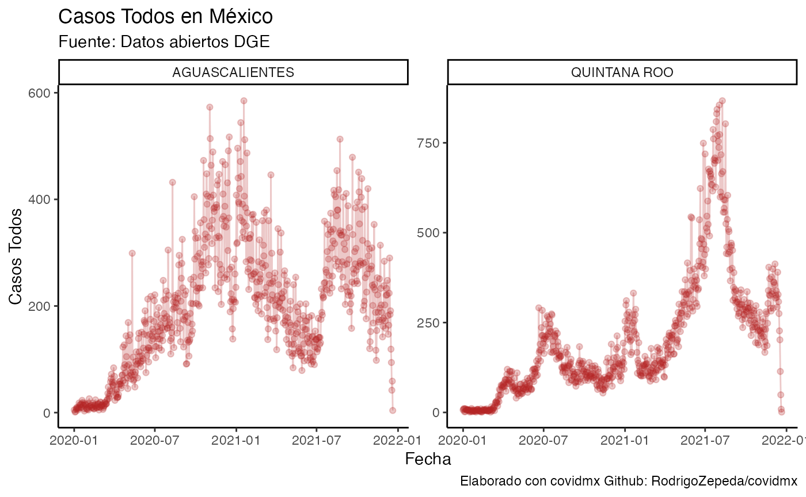
lo cual es equivalente a:
Si se quiere filtrar por entidad de nacimiento y que la fecha sea la de ingreso, por ejemplo:
datos_covid %>%
casos(entidades = c("QUINTANA ROO","AGUASCALIENTES"),
entidad_tipo = "Nacimiento",
fecha_tipo = "Ingreso") %>%
covid_plot()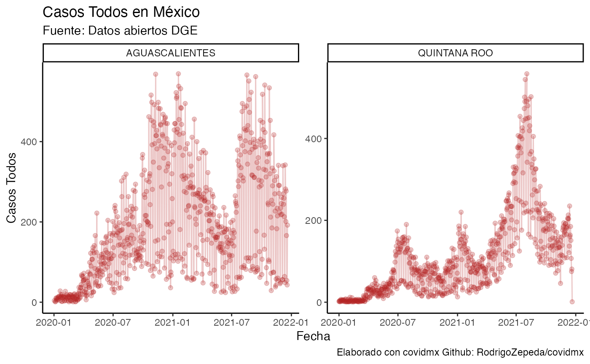
lo cual es equivalente a:
datos_covid %>%
filter(ENTIDAD_NAC %in% c("QUINTANA ROO", "AGUASCALIENTES")) %>%
group_by(FECHA_INGRESO, ENTIDAD_NAC) %>%
tally()Finalmente, si sólo se desean casos confirmados:
datos_covid %>%
casos(entidades = c("QUINTANA ROO","AGUASCALIENTES"),
entidad_tipo = "Nacimiento",
fecha_tipo = "Ingreso",
tipo_caso = "Confirmados COVID") %>%
covid_plot()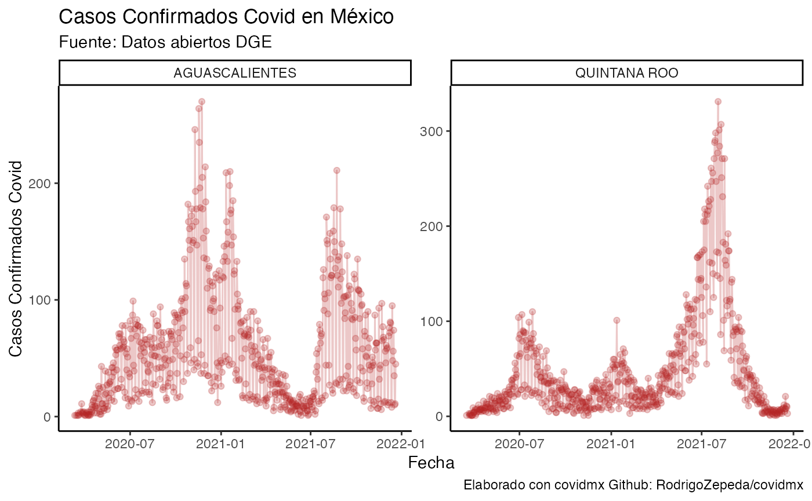
Si se desea que los casos vengan agregados (es decir QUINTANA ROO + AGUASCALIENTES) se puede cambiar la opción de group_by_entidad:
datos_covid %>%
casos(entidades = c("QUINTANA ROO","AGUASCALIENTES"),
entidad_tipo = "Nacimiento",
fecha_tipo = "Ingreso",
tipo_caso = "Confirmados COVID",
group_by_entidad = FALSE) %>%
covid_plot()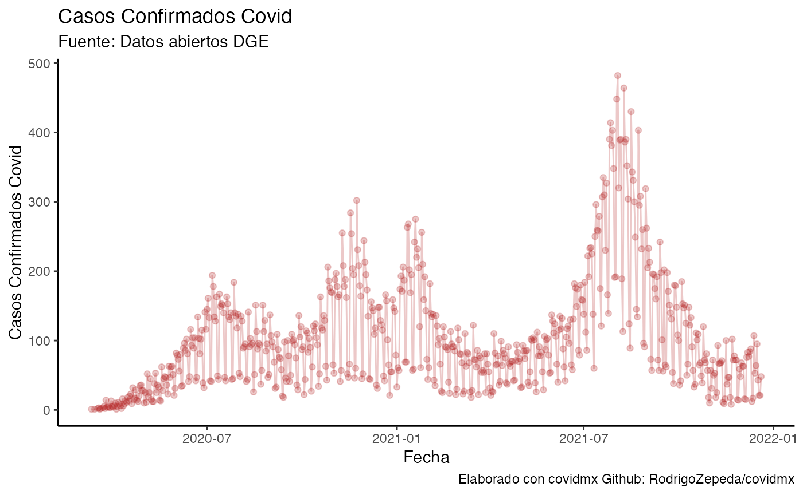 Esto es equivalente a:
datos_covid %>%
filter(ENTIDAD_NAC %in% c("QUINTANA ROO", "AGUASCALIENTES")) %>%
filter(CLASIFICACIÓN == "CASO DE SARS-COV-2 CONFIRMADO") %>%
group_by(FECHA_INGRESO) %>%
tally()Podemos suavizar estos datos con la función smooth
datos_covid %>%
casos(entidades = c("QUINTANA ROO","AGUASCALIENTES"),
entidad_tipo = "Nacimiento",
fecha_tipo = "Ingreso",
tipo_caso = "Confirmados COVID") %>%
smooth() %>%
covid_plot()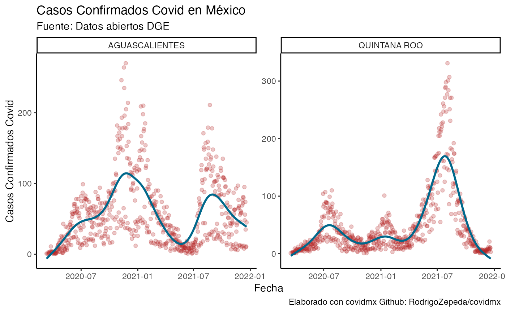
Podemos obtener su derivada usando tasa_cambio y a su vez suavizarla:
datos_covid %>%
casos(entidades = c("QUINTANA ROO","AGUASCALIENTES"),
entidad_tipo = "Nacimiento",
fecha_tipo = "Ingreso",
tipo_caso = "Confirmados COVID") %>%
smooth() %>%
tasa_cambio(variable = "SMOOTH") %>%
covid_plot()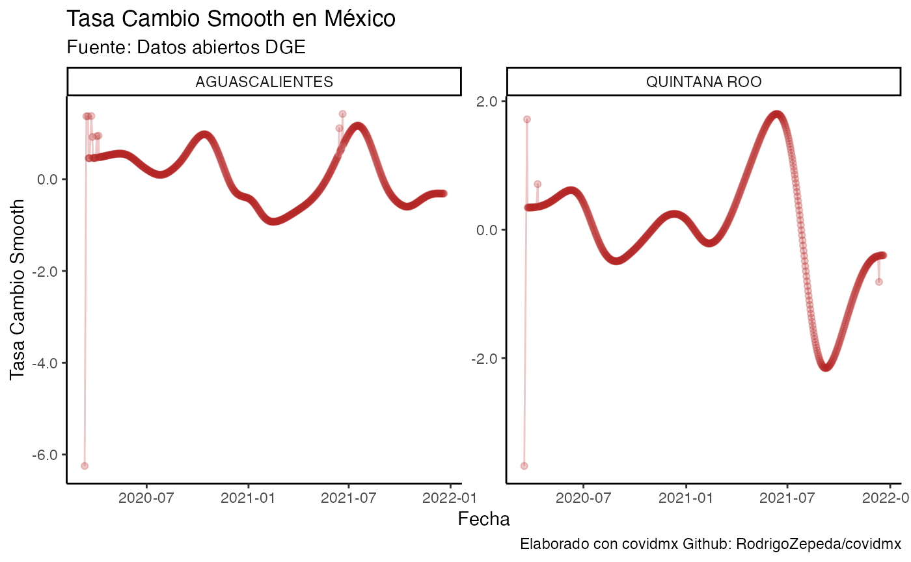
Los casos acumulados se obtienen con la función acumulados:
datos_covid %>%
casos(entidades = c("QUINTANA ROO","AGUASCALIENTES"),
entidad_tipo = "Nacimiento",
fecha_tipo = "Ingreso",
tipo_caso = "Confirmados COVID") %>%
acumulados() %>%
covid_plot()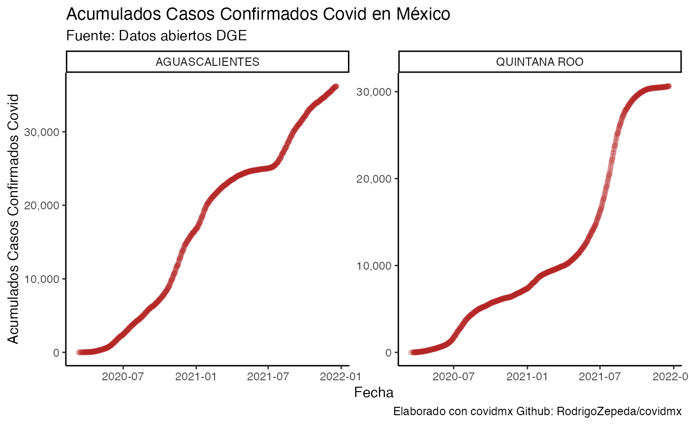
En cada sección se explica una variable de interés o un método asociado.
Positividad
Definimos la positividad como: \[ \text{Positividad}(t) = \frac{\textrm{Número de pruebas positivas en día }t}{\textrm{Número de pruebas positivas en día }t + \textrm{Número de pruebas negativas en día }t} \]
Ojo Hay gente que en el denominador de la positividad incluye también las pruebas inconclusas. Aquí no las usamos pues consideramos ser inconcluso es igualmente probable para positivos y negativos.
Las funciones importantes de positividad son:
-
positividadpara todas las pruebaspcryantígeno. -
positividad_pcrpara pruebas depcr -
positividad_antigenospara pruebas deantígeno
#Positividad general en sonora
datos_covid %>%
positividad(entidades = "SONORA") %>%
covid_plot()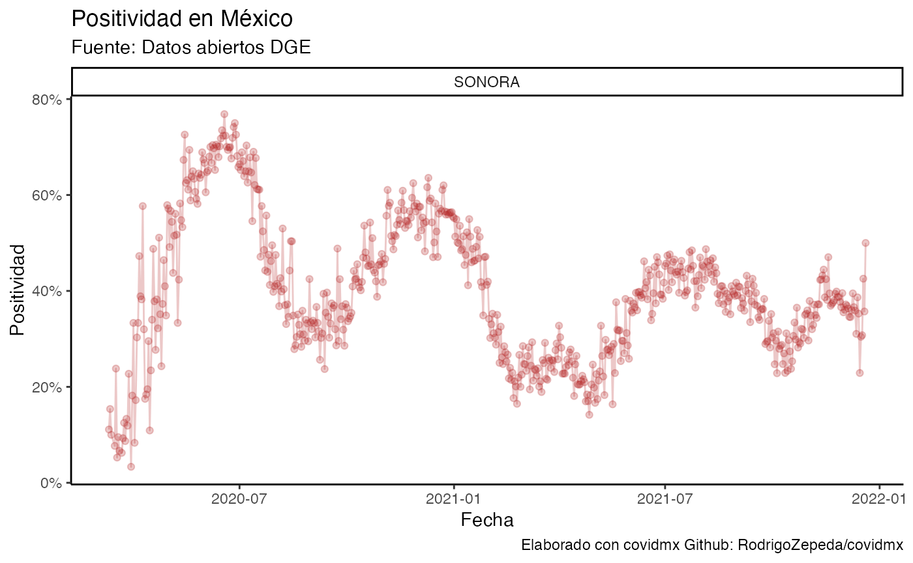
Podemos analizar la positividad sólo de PCR
#Positividad de pcr (lab) dentro de los muertos en sonora
datos_covid %>%
positividad_pcr(entidades = "SONORA", fecha_tipo = "Defunción") %>%
smooth() %>%
covid_plot()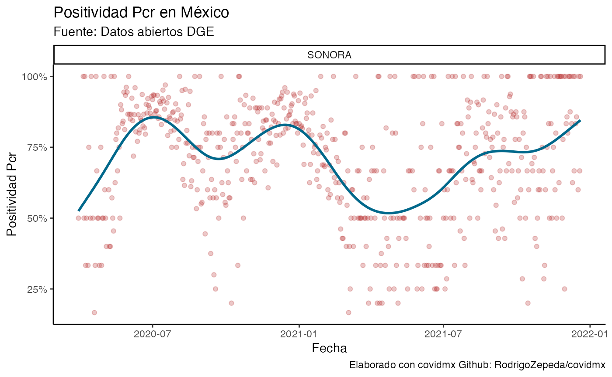
Podemos analizar la positividad de ambulatorios, dentro de fallecidos
#Contraste contra antígenos en ambulatorios nacionales que fallecieron
datos_covid %>%
filter(TIPO_PACIENTE == "AMBULATORIO") %>%
positividad_antigenos(fecha_tipo = "Defunción",
group_by_entidad = F) %>%
smooth() %>%
covid_plot()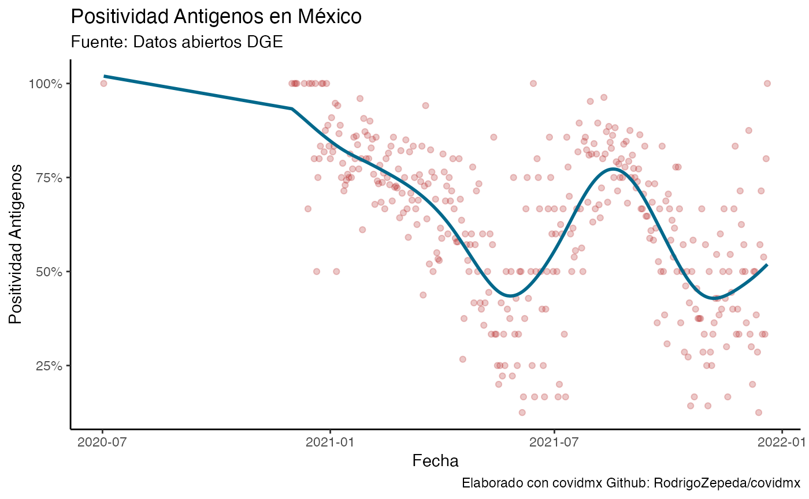
Número de pruebas
El número de pruebas se calcula como:
\[ \text{Pruebas}(t) = \textrm{Número de pruebas positivas} + \textrm{Número de pruebas negativas} + \textrm{Número de pruebas inconclusas} \] esto para cada día.
Las funciones importantes de número de pruebas son:
-
numero_pruebaspara todas las pruebaspcryantígeno. -
numero_pruebas_pcrpara pruebas depcr -
numero_pruebas_antigenospara pruebas deantígeno -
numero_pruebas_esperando_resultadopara pruebas depcr(antígeno, por su naturaleza, no tienependiente)
#Total de pruebas en sonora y sinaloa
datos_covid %>%
numero_pruebas(entidades = c("SONORA","SINALOA")) %>%
covid_plot()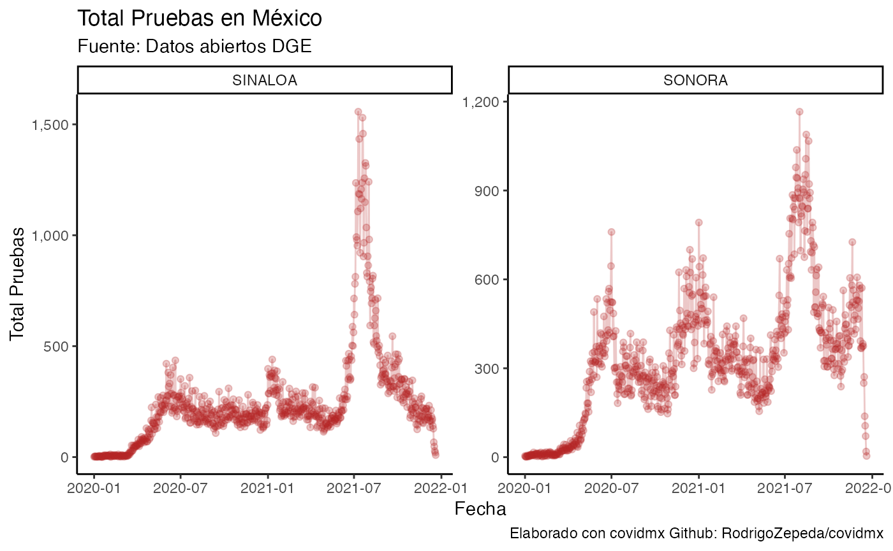
Total de pruebas PCR:
#Pruebas PCR dedicadas a embarazadas
datos_covid %>%
filter(EMBARAZO == "SI") %>%
numero_pruebas_pcr(group_by_entidad = F) %>%
smooth() %>%
covid_plot()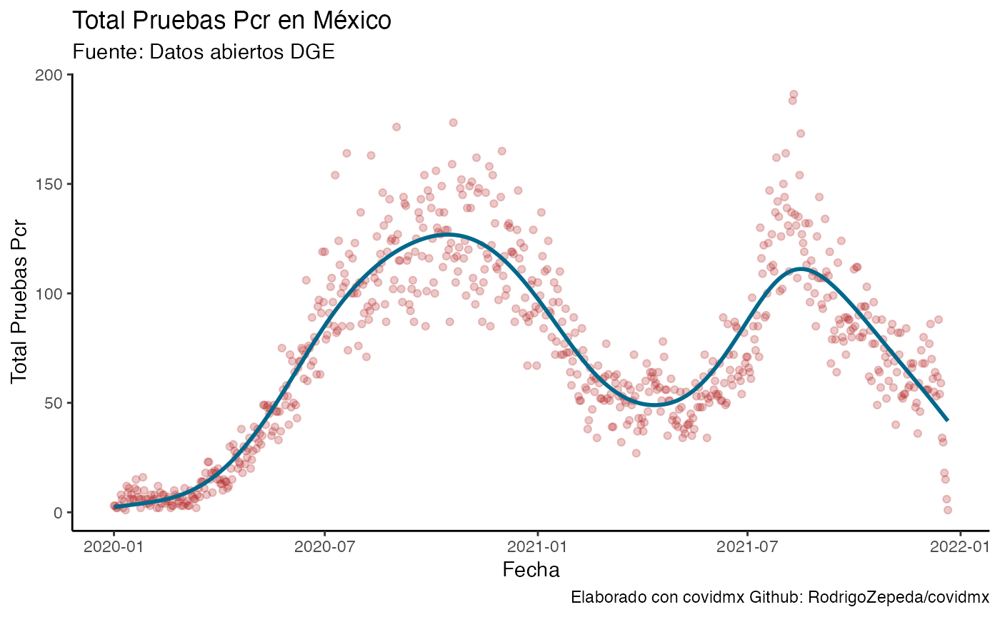
Pruebas de antígeno:
#Pruebas antígeno en CDMX / Tlalpan
datos_covid %>%
filter(MUNICIPIO_RES == "TLALPAN") %>%
numero_pruebas_antigeno(entidades = "CIUDAD DE MÉXICO") %>%
covid_plot()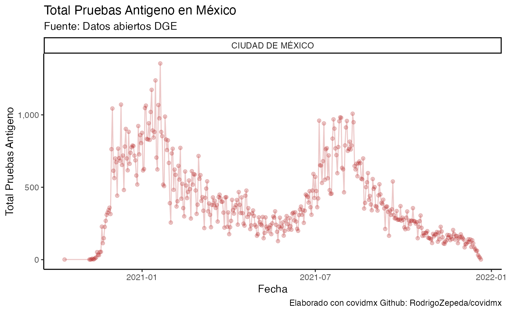
Pruebas que están esperando resultado:
#Pruebas esperando resultado (acumuladas)
datos_covid %>%
numero_pruebas_esperando_resultado(group_by_entidad = F) %>%
acumulados() %>%
covid_plot()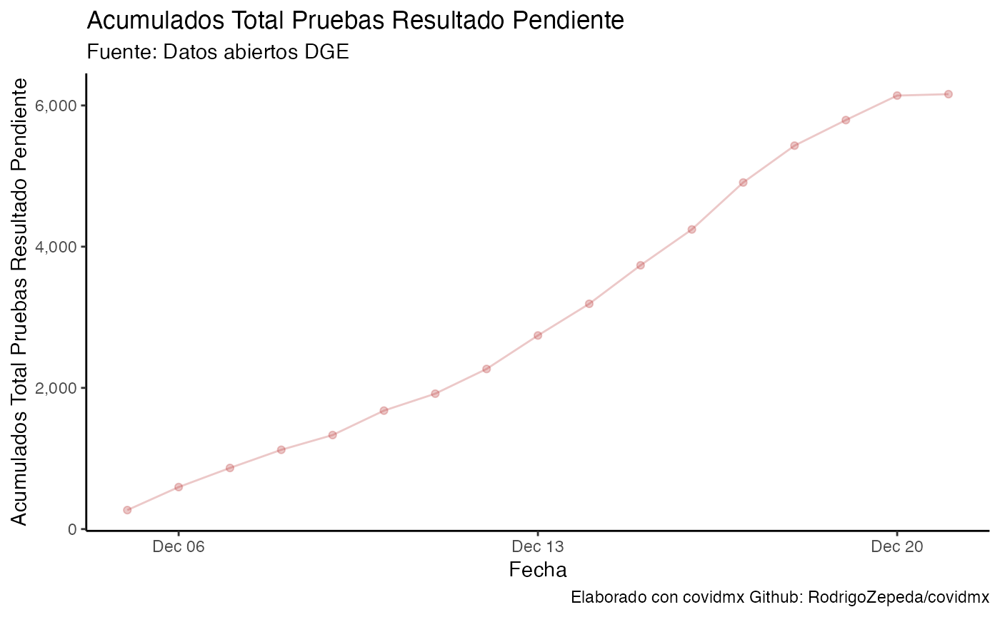
Casos
Los casos se cuentan como cada una de las filas en el registro de datos abiertos. Las funciones relevantes son:
-
casospara todos los casos. -
casos_hospitalizadospara aquellos conTIPO_PACIENTEhospitalizado. -
casos_ambulatoriospara aquellos conTIPO_PACIENTEambulatorio. -
casos_ucipara aquellos conTIPO_PACIENTEhospitalizado y marca de Unidad de Cuidados Intensivos.
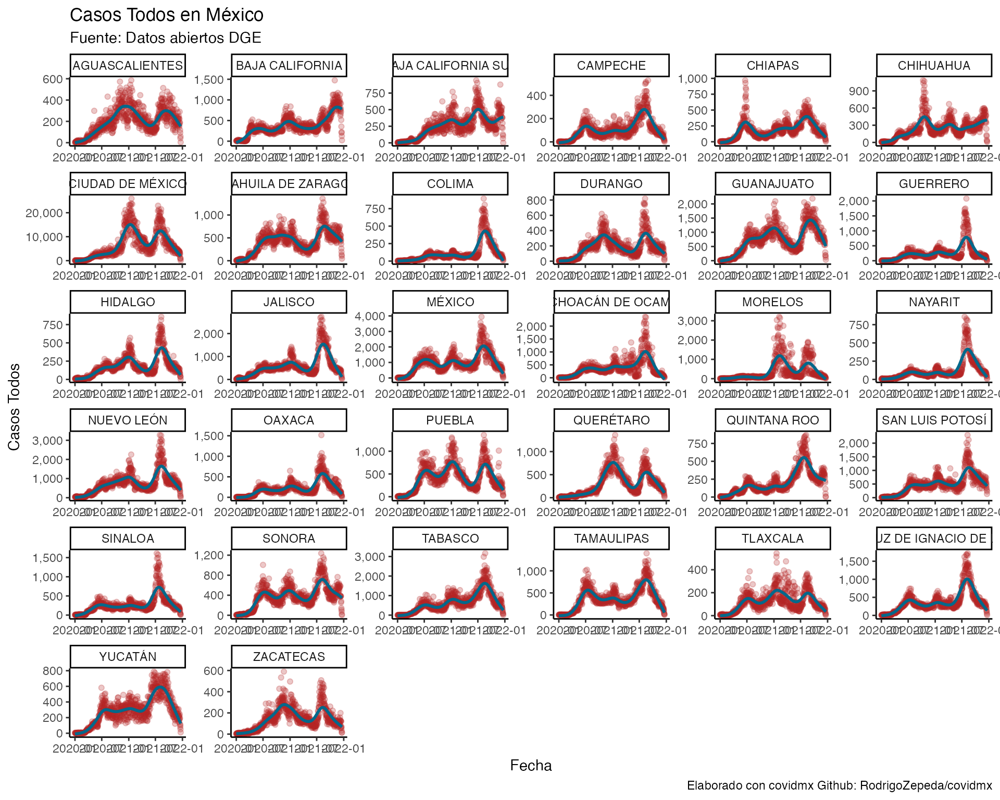 Para obtener los nacionales basta con la opción group_by_entidad = FALSE:
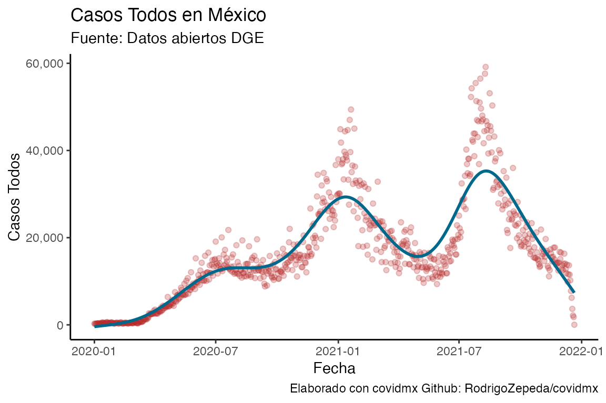
Se puede filtrar por tipo de entidad (Unidad Médica, Residencia o Nacimiento), por fecha de Síntomas, Ingreso ó Defunción (esta última regresa sólo defunciones) y por tipo de caso: Todos, Sospechosos, Confirmados COVID, Sospechosos y Confirmados COVID y Negativo a COVID:
datos_covid %>%
casos_hospitalizados(
entidad_tipo = "Residencia",
fecha_tipo = "Ingreso",
tipo_caso = "Sospechosos y Confirmados COVID",
group_by_entidad = FALSE
) %>%
smooth() %>%
covid_plot()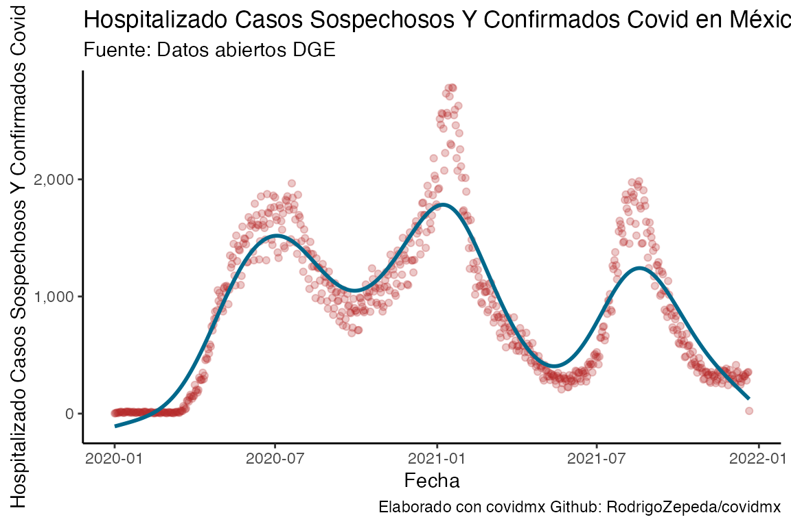
Las mismas funciones aplican para UCI y ambulatorios:
datos_covid %>%
casos_ambulatorios(
entidad_tipo = "Residencia",
fecha_tipo = "Ingreso",
tipo_caso = "Sospechosos y Confirmados COVID",
group_by_entidad = FALSE
) %>%
smooth() %>%
covid_plot()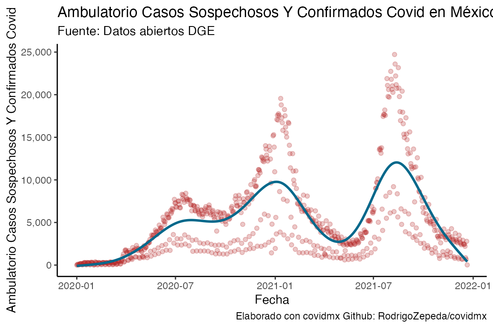
datos_covid %>%
casos_uci(
entidad_tipo = "Residencia",
fecha_tipo = "Ingreso",
tipo_caso = "Sospechosos y Confirmados COVID",
group_by_entidad = FALSE
) %>%
smooth() %>%
covid_plot()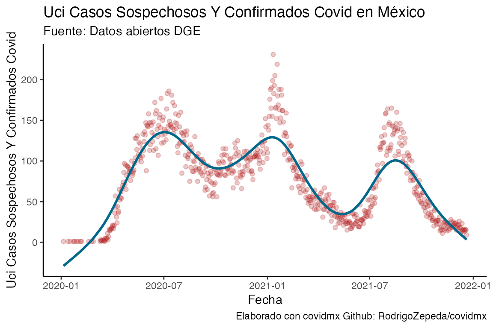
Defunciones
Las funciones de defunciones son idénticas a las de casos sólo que por default están organizadas por FECHA_DEF. Están disponibles:
-
defuncionespara todos los pacientes -
defunciones_hospitalizadospara aquellos conTIPO_PACIENTEhospitalizado. -
defunciones_ambulatoriospara aquellos conTIPO_PACIENTEambulatorio. -
defunciones_ucipara aquellos conTIPO_PACIENTEhospitalizado y marca de Unidad de Cuidados Intensivos.
Las opciones son las mismas que para casos:
datos_covid %>%
defunciones(
entidad_tipo = "Residencia",
fecha_tipo = "Ingreso",
tipo_caso = "Sospechosos y Confirmados COVID",
group_by_entidad = FALSE
) %>%
smooth() %>%
covid_plot()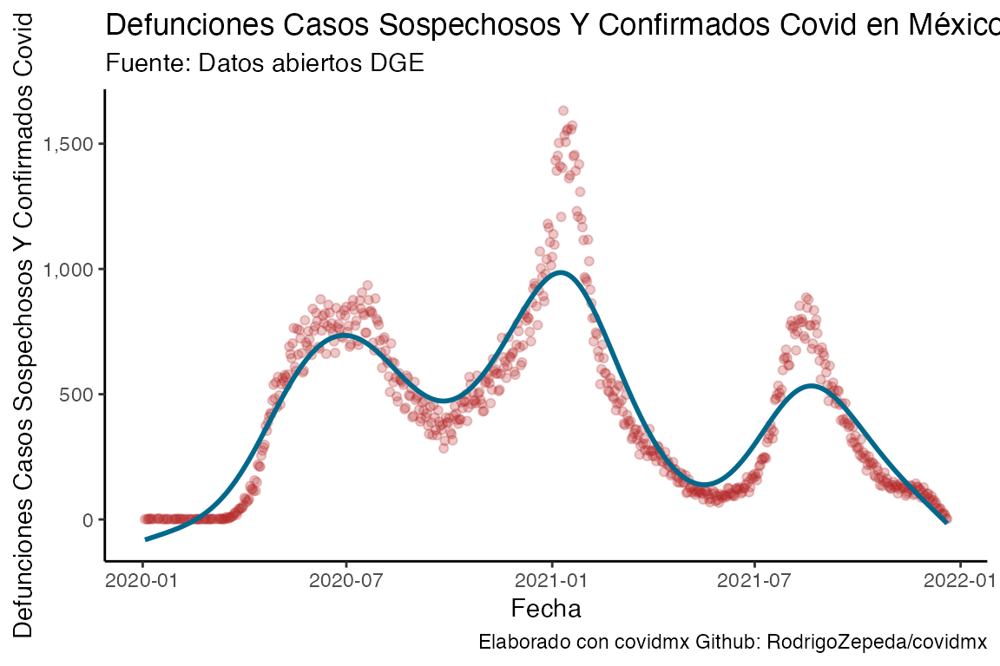
Podemos ver, por ejemplo, las defunciones acumuladas de Tuxtla Gutiérrez:
datos_covid %>%
filter(MUNICIPIO_RES == "TUXTLA GUTIÉRREZ") %>%
defunciones_hospitalizados(entidades = "CHIAPAS") %>%
acumulados()#> # A tibble: 6 × 3
#> # Groups: ENTIDAD_UM [1]
#> ENTIDAD_UM FECHA_DEF ACUMULADOS_Defunciones_Hospitalizado_Casos_TODOS
#> <chr> <date> <int>
#> 1 CHIAPAS 2020-02-05 1
#> 2 CHIAPAS 2020-03-02 2
#> 3 CHIAPAS 2020-03-21 3
#> 4 CHIAPAS 2020-03-31 4
#> 5 CHIAPAS 2020-04-01 5
#> 6 CHIAPAS 2020-04-02 6O la tasa de cambio de las defunciones en UCI en COLIMA:
datos_covid %>%
defunciones_uci(entidades = "COLIMA") %>%
tasa_cambio() #> # A tibble: 6 × 3
#> # Groups: ENTIDAD_UM [1]
#> ENTIDAD_UM FECHA_DEF TASA_CAMBIO_UCI_Casos_TODOS
#> <chr> <date> <dbl>
#> 1 COLIMA 2020-04-12 1
#> 2 COLIMA 2020-04-16 0
#> 3 COLIMA 2020-05-20 0
#> 4 COLIMA 2020-05-24 0
#> 5 COLIMA 2020-06-07 0
#> 6 COLIMA 2020-06-15 0O la misma situación con ambulatorios:
datos_covid %>%
defunciones_ambulatorios(entidades = "COLIMA") %>%
smooth() %>%
tasa_cambio('SMOOTH') #> # A tibble: 6 × 3
#> # Groups: ENTIDAD_UM [1]
#> ENTIDAD_UM FECHA_DEF TASA_CAMBIO_SMOOTH
#> <chr> <date> <dbl>
#> 1 COLIMA 2020-05-29 1.17
#> 2 COLIMA 2020-05-31 -0.000954
#> 3 COLIMA 2020-06-19 -0.0234
#> 4 COLIMA 2020-06-23 -0.0106
#> 5 COLIMA 2020-07-09 -0.0602
#> 6 COLIMA 2020-07-11 -0.00761Suavizamiento
Los datos observados pueden suavizarse usando splines (method = "splines"), un kernel (method = "kernel"), local weighted (method = "lowess") y media móvil (method = "rollmean"). La siguiente gráfica muestra los métodos:
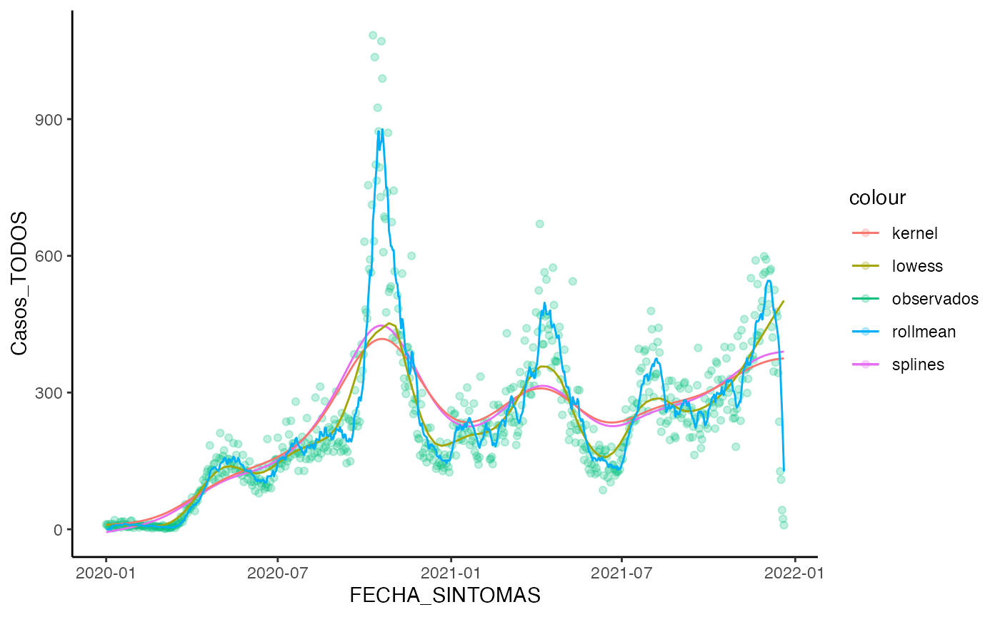
Los parámetros de ajuste son como siguen:
splinesse pueden cambiar los grados de libertad condfmenos grados de libertad = más lineal; más grados de libertad = más curva.kernelse puede cambiar el ancho de banda conbw.bwmás pequeño tiende al sobreajuste;bwmás grande tiende al subajuste.lowessse puede cambiar el parámetrof. Más altofmás suavizado.rollmeanse pueden cambiar los días a incluir en la media móvil conk. Por default se tienek = 7. Conk = 1se obtienen los datos originales. A mayorkmayor suavizamiento.
Tasa de cambio
La tasa de cambio para cualquiera de las variables se refiere a la variable del día \(t\) menos la del día \(t-1\). Por ejemplo, en el caso de casos:
\[ \textrm{Tasa de Cambio}_{\text{Casos}}(t) = \text{Casos}(t) - \text{Casos}(t-1) \]
Por el mismo ruido de los datos la tasa de cambio tiende a oscilar en torno a cero por lo que en sí misma no es muy informativa:
datos_covid %>%
casos(group_by_entidad = F) %>%
tasa_cambio() %>%
covid_plot()
#> Warning in tasa_cambio(.): Para la tasa de cambio se sugieresuavizar primero con smooth:
#> covid_dataset %>% smooth() %>% tasa_cambio('SMOOTH')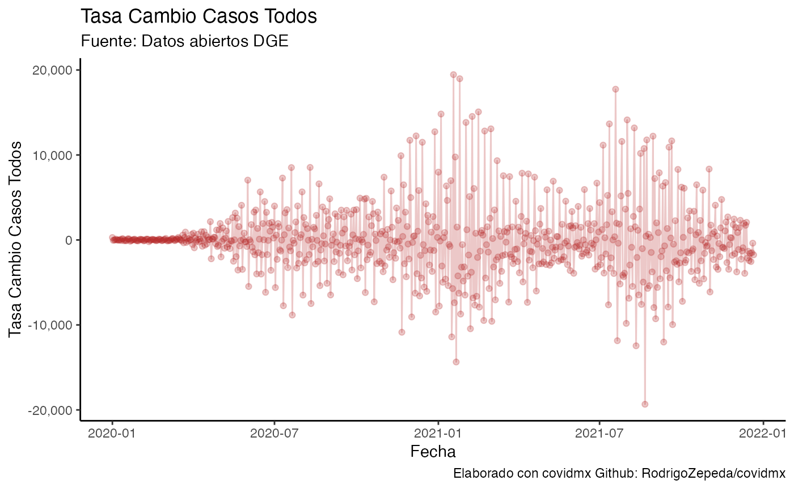
La recomendación (de acuerdo con el Warning) es tomar la tasa de cambio pero de la variable suavizada:
datos_covid %>%
casos(group_by_entidad = F) %>%
smooth() %>%
tasa_cambio(variable = "SMOOTH") %>%
covid_plot()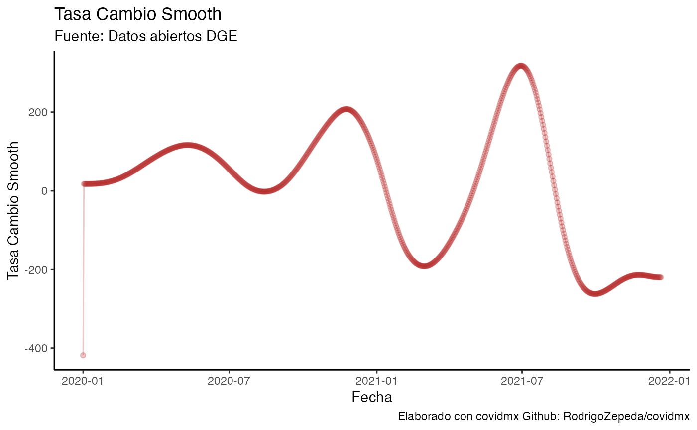
la cual resulta en una mejor aproximación a la derivada.
Ojo Una tasa de cambio positiva implica que los casos van en aumento; negativa implica reducción y cero implica que permanecen constantes.
Acumulados
Los casos acumulados se pueden obtener mediante el comando acumulados. Estos corresponden a todos los casos que han ocurrido hasta antes del tiempo \(t\) (incluyendo dicho momento). Es decir:
\[ \textrm{Acumulados(t)} = \sum\limits_{s = t_0}^t \textrm{Casos}(s) \]
donde \(t_0\) es el inicio de los registros. Por ejemplo, los casos acumulados en el tercer día de pandemia (suponiendo empezó en \(t_0 = 0\)) serían:
\[ \textrm{Acumulados(3)} = \textrm{Casos}(0) + \textrm{Casos}(1) + \textrm{Casos}(2) + \textrm{Casos}(3) \]
Como ejemplo se tiene:
datos_covid %>%
casos(group_by_entidad = F) %>%
acumulados() %>%
covid_plot()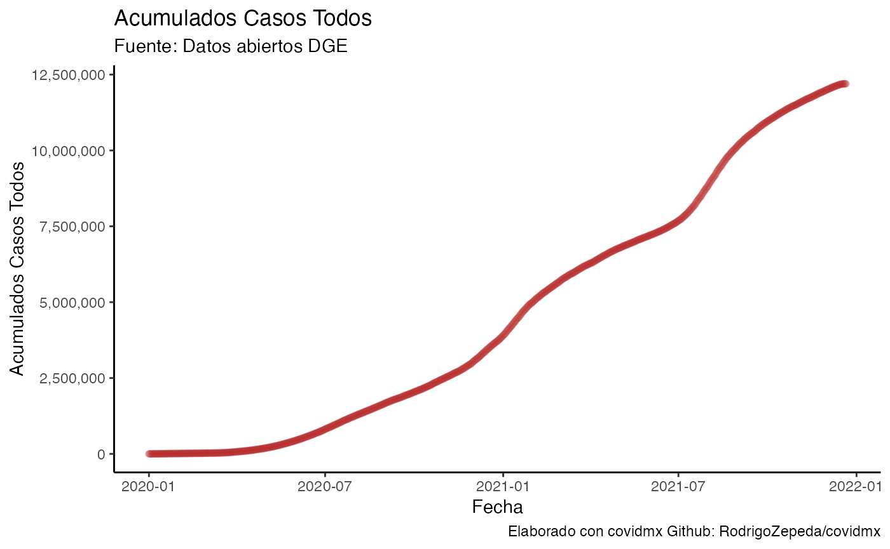
Otras funciones de interés
Faltan por desarrollar las siguientes funciones:
cfr() #Case fatality rate
chr() #Case hospitalization rate
rt() #Effective reproductive number
descarga_datos_ocupacion() #Descarga de datos de ocupación hospitalaria
descarga_datos_vacunacion() #Descarga de datos de vacunación
descarga_datos_cdmx() #Descarga de datos abiertos cdmx
tasa() #Convierte casos en tasas